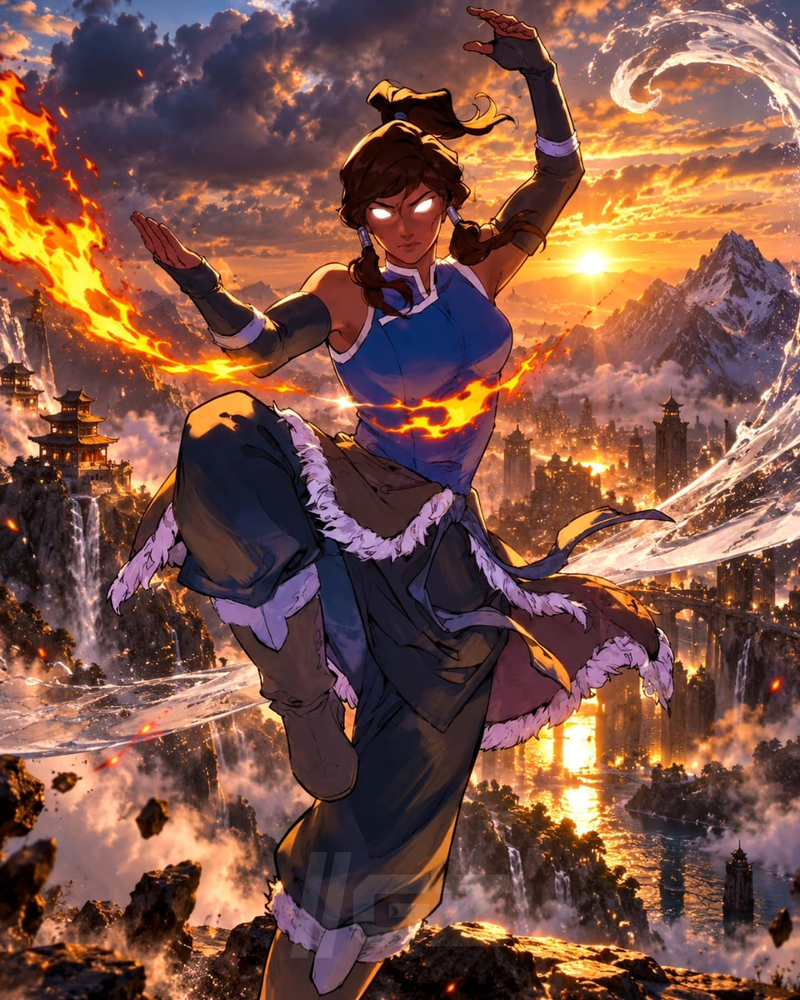

Quem é Korra

1. Abriu os Portais Espirituais e Trouxe a Dobra de Ar de Volta
Nenhum Avatar em mais de dez mil anos teve a coragem e a visão de reconectar o Mundo Humano com o Mundo Espiritual da forma que ela fez. Ao manter os portais abertos após a Convergência Harmônica, restaurou o equilíbrio ancestral e provocou o surgimento da Nova Nação do Ar, revivendo uma cultura inteira.
2. Derrotou o Espírito do Mal e Tornou-se o Primeiro Avatar da Nova Era
Mesmo após perder a conexão com as vidas passadas devido ao Avatar Escuro, Korra usou a energia da própria alma na Árvore do Tempo para se tornar uma gigante de luz pura e derrotar Vaatu. Ela se reuniu com Raava e deu início a um novo ciclo de dez mil anos.
3. Sobreviveu ao Veneno de Mercúrio e Dobrou a Própria Energia
Sobreviveu ao veneno metálico injetado pela Lótus Vermelha enquanto lutava no Estado Avatar. Anos depois, superou traumas profundos e extraiu os resíduos do veneno do próprio corpo.
4. Criou um Novo Portal Espiritual no Meio da Cidade República
No confronto contra Kuvira, protegeu a cidade de um feixe de energia espiritual em massa usando a Dobra de Energia, rasgando o tecido da realidade e abrindo um novo Portal Espiritual.
5. Mestre em Três Elementos na Infância
Demonstrou controle precoce sobre Água, Terra e Fogo ainda na infância, exibindo uma aptidão física e elemental sem precedentes.